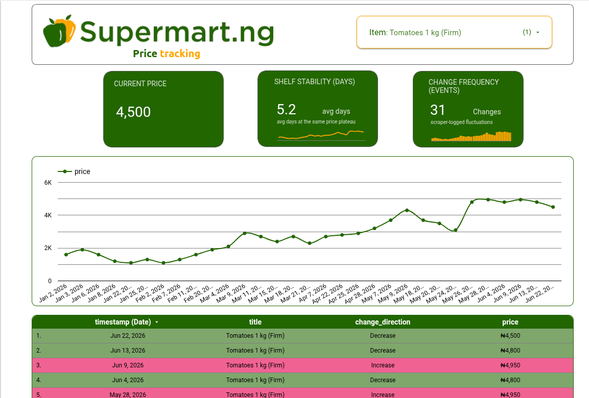

Oluwaseun Ilori
Data Scientist
MSc Computer Science (AI) · Currently at MyLane.AI
I build analytics workflows and data pipelines that turn raw data into decisions. My work spans labor market analysis, forecasting, compensation parsing, and end-to-end data systems using Python, SQL, BigQuery, Airflow, and cloud infrastructure.
Experience
Industry roles across data science, ML engineering, and teaching.
My background combines data analysis, production delivery, and technical communication.
Selected wins
- Won the 2022 MathWorks MiniDrone Competition virtual round in the EMEA region, finishing ahead of 330+ teams.
- Designed end-to-end systems spanning data collection, forecasting, OCR, and cloud deployment.
MyLane.AI
Jul 2024 - PresentData Scientist
- Analyze U.S. labor market trends using job postings data, BLS, and Census sources.
- Build forecasting models for workforce growth across healthcare specialties.
- Support compensation parsing systems for wage extraction and normalization.
TalaNanu
May 2023 - Jun 2024Computer Vision Engineer
- Trained and deployed a fine-grained image classifier that reached 98% accuracy.
- Reduced OCR inference latency from over one minute to under 20 seconds.
- Delivered model training and deployment workflows with Docker, FastAPI, and GCP.
Babcock University
Oct 2025 - PresentTeaching Assistant and E-Tutor
- Teach machine learning, Linux system administration, C programming, and data management.
- Lead practical SQL sessions for Database Systems Design, Implementation and Management.
Skills
Tools and technologies for data science and production ML.
From data wrangling and analytics to cloud deployment and reporting.
Programming & Data
Machine Learning
Data Infrastructure & Cloud
MLOps & Deployment
Analytics & Visualization
Selected Projects
Data science projects demonstrating pipeline and analytics capability.
End-to-end work from data collection through transformation, storage, and reporting.

Supermart NG Price Tracker
Built a retail price tracking pipeline that scrapes Supermart product pages, cleans and validates product records, prepares analytics-ready datasets, and supports reporting with Google Cloud Storage, BigQuery, dbt, and Airflow.
View projectCertifications
Relevant training and certifications.
Machine Learning with Python
Jul 2020CognitiveClass.ai
Introductory machine learning coursework covering core concepts and Python-based workflows.
Introduction to AI, ML and DL
Sep 2021DeepLearning.AI
Foundational overview of artificial intelligence, machine learning, and deep learning systems.
Grant Writing Class
Jun 2025Research, Innovation and International Cooperation, Babcock University
Training focused on proposal development, research communication, and funding readiness.